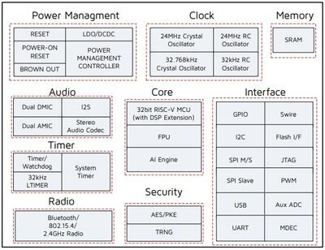

TLSR9518ADK80D
概述
TLSR9518A 通用入门套件是一个硬件平台，可用于验证 Telink TLSR951x series chipset [1]，并为多种 2.4 GHz 空中接口标准开发应用，包括 Bluetooth 5.2（基本数据速率、增强数据速率、LE、室内定位和 BLE Mesh）、Zigbee 3.0、Homekit、6LoWPAN、Thread 和 2.4 Ghz 专有协议。
有关该开发板的更多信息，请访问 Telink B91 Generic Starter Kit Hardware Guide [2] 网站。
硬件
TLSR9518A SoC 集成了强大的 32 位 RISC-V MCU、DSP、AI 引擎、2.4 GHz ISM 射频、256 KB SRAM（128 KB 数据本地存储器和 128 KB 指令本地存储器）、外部 Flash、立体声音频编解码器、14 位 AUX ADC、模拟和数字麦克风输入、PWM、灵活的 IO 接口，以及高级物联网、可听戴和可穿戴设备所需的其他外设模块。

TLSR9518ADK80D 默认开发板配置提供以下硬件组件：
RF 传导天线
1 MB 外部 Flash，带复位按键
芯片复位按键
Mini USB 接口
四线 JTAG
4 个 LED，按键矩阵最多 4 个按键
2 路线路输入（从麦克风通路切换跳线后可支持双模拟麦克风）
双数字麦克风
立体声线路输出
支持的功能
tlsr9518adk80d 开发板支持下列硬件功能。
说明
The list of supported hardware features was not generated. Run a full documentation build for the required metadata to be available.
备注
要支持 "button" 示例项目，需要拆除 PC3-KEY3（J20-19、J20-20）跳线，并将 KEY3（J20-19）从外部连接到 VDD3_DCDC（J51-13）。
其余示例项目使用默认跳线配置。
限制
最多可同时将 3 个 GPIO 引脚配置为产生中断。这些引脚必须属于不同的端口并使用不同的 IRQ 号。
I2C、SPI 和串口不支持 DMA 模式。
未实现 UART 硬件流控。
未实现 SPI 从机模式。
未实现 I2C 从机模式。
默认配置与 IO
系统时钟
TLSR9518ADK80D 开发板配置为使用 24 MHz 外部晶体振荡器，由片上 PLL/DIV 产生 48 MHz 系统时钟。也可以在开发板 DTS 文件 boards/telink/tlsr9518adk80d/tlsr9518adk80d.dts 中将系统时钟设为以下值：
16000000
24000000
32000000
48000000
64000000
96000000
&cpu0 {
clock-frequency = <48000000>;
};
引脚配置
TLSR9518A SoC 有 5 个 GPIO 控制器（PORT_A 至 PORT_E），但开发板 DTS 文件中目前只启用了两个（PORT_B 用于 LED 控制，PORT_C 用于按键）：
LED0（蓝色）：PB4，LED1（绿色）：PB5，LED2（白色）：PB6，LED3（红色）：PB7
按键矩阵 SW0：PC2_PC3，SW1：PC2_PC1，SW2：PC0_PC3，SW3：PC0_PC1
SoC 上的外设引脚在 boards/telink/tlsr9518adk80d/tlsr9518adk80d.dts 文件中映射到以下 GPIO 引脚：
UART0 TX: PB2, RX: PB3
UART1 TX: PC6, RX: PC7
PWM 通道 0：PB4
PSPI CS0: PC4, CLK: PC5, MISO: PC6, MOSI: PC7
HSPI CS0: PA1, CLK: PA2, MISO: PA3, MOSI: PA4
I2C SCL: PE1, SDA: PE3
串口
TLSR9518A SoC 有 2 个 UART。Zephyr 控制台输出分配到 UART0。默认设置为 115200 8N1。
编程与调试
说明
The list of supported runners was not generated. Run a full documentation build for the required metadata to be available.
构建
重要
以下说明假定已按 入门指南 中的描述搭建好开发环境。
要使用 Zephyr SDK 中默认的 RISC-V 工具链构建应用程序，只需运行 west build 命令。下面以 "hello_world" 应用程序为例。
# From the root of the zephyr repository
west build -b tlsr9518adk80d samples/hello_world
要使用 Telink RISC-V Linux Toolchain [3]，需要设置 ZEPHYR_TOOLCHAIN_VARIANT 和 CROSS_COMPILE 变量。此外，必须在 boards/telink/tlsr9518adk80d/tlsr9518adk80d_defconfig 文件中选择 CONFIG_FPU=y，因为该工具链只兼容使用浮点单元的情况。
# Set Zephyr toolchain variant to cross-compile
export ZEPHYR_TOOLCHAIN_VARIANT=cross-compile
# Specify the Telink RISC-V Toolchain location
export CROSS_COMPILE=~/toolchains/nds32le-elf-mculib-v5f/bin/riscv32-elf-
# From the root of the zephyr repository
west build -b tlsr9518adk80d samples/hello_world
Telink RISC-V Linux Toolchain [3] 可在 Burning and Debugging Tools for TLSR9 Series in Linux [6] 页面获取。
打开串口终端，设置如下：
波特率：115200
数据位：8 位
校验位：无
停止位：1
烧录开发板并复位，然后在所选串口上观察以下信息：
*** Booting Zephyr OS version 2.5.0 ***
Hello World! tlsr9518adk80d
烧录
烧录 TLSR9518ADK80D 开发板的方法请参阅以下资料：
也可以使用 west flash 命令，但需要额外的设置步骤：
下载 Telink RISC-V Linux Toolchain [3]。该工具链同样包含用于烧录开发板的工具。
由于 ICEman 工具是为 32 位操作系统构建的，在 64 位操作系统上需要安装额外的软件包。
sudo dpkg --add-architecture i386
sudo apt-get update
sudo apt-get install -y libc6:i386 libncurses5:i386 libstdc++6:i386
运行 "ICEman.sh" 脚本。
# From the root of the {path to the Telink RISC-V Linux Toolchain}/ice repository
sudo ./ICEman.sh
现在应该可以在指定工具链路径（TELINK_TOOLCHAIN_PATH）的情况下运行 west flash 命令。
west flash --telink-tools-path=$TELINK_TOOLCHAIN_PATH
如果将 SPI_burn 和 ICEman 加入 PATH，也可以在不指定工具链路径的情况下运行 west flash 命令。
export PATH=$TELINK_TOOLCHAIN_PATH/flash/bin:"$PATH"
export PATH=$TELINK_TOOLCHAIN_PATH/ice:"$PATH"
调试
该移植支持 UART 调试和 OpenOCD+GDB，也支持 west debug 命令。可以简单地运行：
west debug
或者带上额外参数运行：
west debug --gdb-port=<port_number> --gdb-ex=<additional_ex_arguments>
示例：
west debug --gdb-port=1111 --gdb-ex="-ex monitor reset halt -ex b main -ex continue"